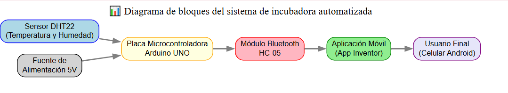

👥 Integrantes y Roles
- Camilo centeno – LÃder técnico
- Juan carrillo – LÃder documental
📖 Justificación
El proyecto de incubadora inteligente busca optimizar el proceso de incubación de huevos, garantizando condiciones adecuadas de temperatura y humedad para mejorar la tasa de éxito. El uso de un sensor DHT22 permitirá medir las variables ambientales, mientras que un microcontrolador Arduino se encargará del procesamiento de datos.
🔧 Sensor a Emplear
- DHT22: Sensor de temperatura y humedad ambiente.
- DS18B20: Sensor digital de temperatura de alta precisión.
- HDC1080: Sensor de humedad y temperatura de bajo consumo.
📚 Referencias Bibliográficas
- Arduino. (2023). Arduino UNO Rev3. Recuperado de arduino.cc
- App Inventor. (2023). MIT App Inventor. Recuperado de appinventor.mit.edu
📊 Diseño del Sistema (Semana 2)
El sistema se basa en un Arduino UNO que recibe datos de un sensor DHT22 (temperatura y humedad). Estos datos se envÃan mediante un módulo Bluetooth HC-05 a una aplicación desarrollada en App Inventor, permitiendo al usuario monitorear las condiciones de la incubadora desde su teléfono.
Diagrama de Bloques
Justificación
Se eligió Bluetooth como medio de comunicación porque permite una conexión sencilla y directa entre el Arduino y el teléfono móvil sin necesidad de Internet. Además, se empleará App Inventor como plataforma para la aplicación, ya que facilita el diseño de apps educativas y de prototipado rápido en dispositivos Android.